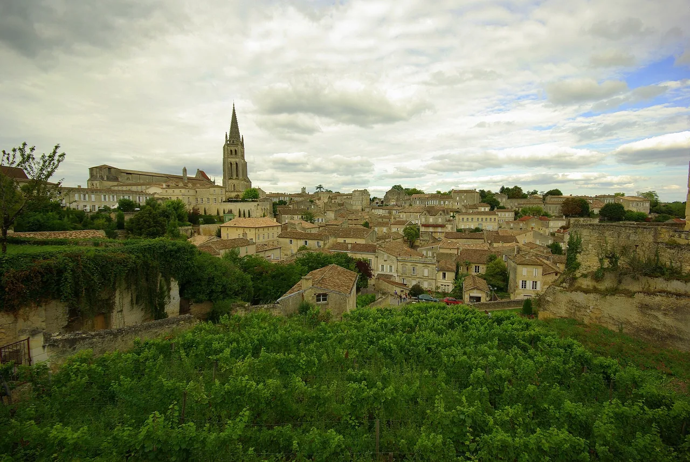
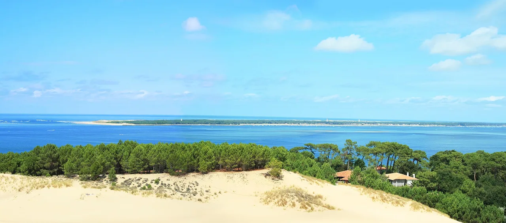
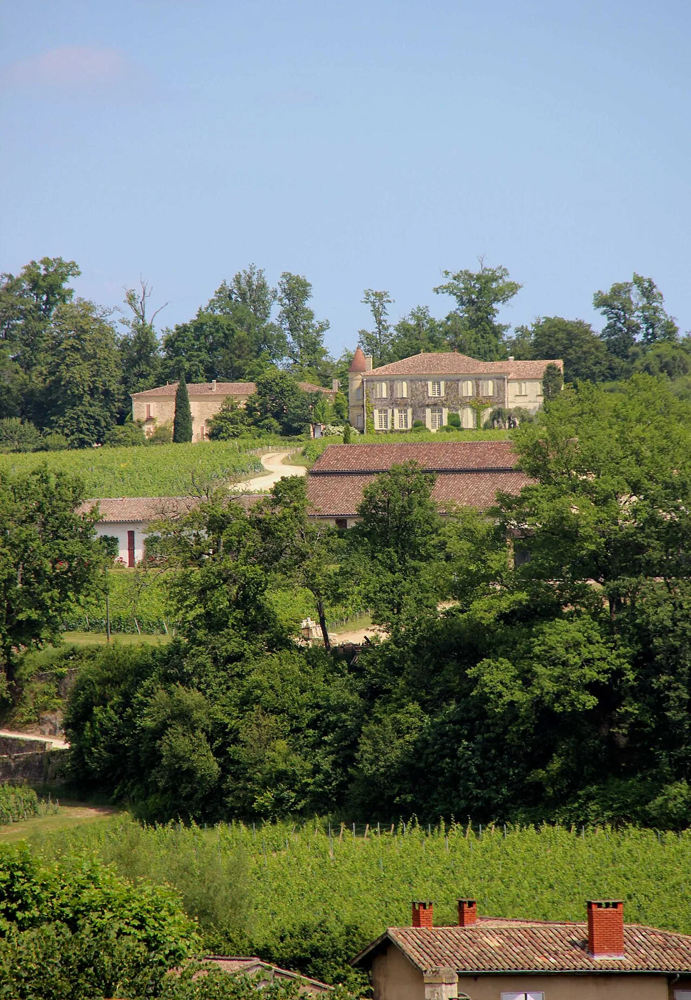
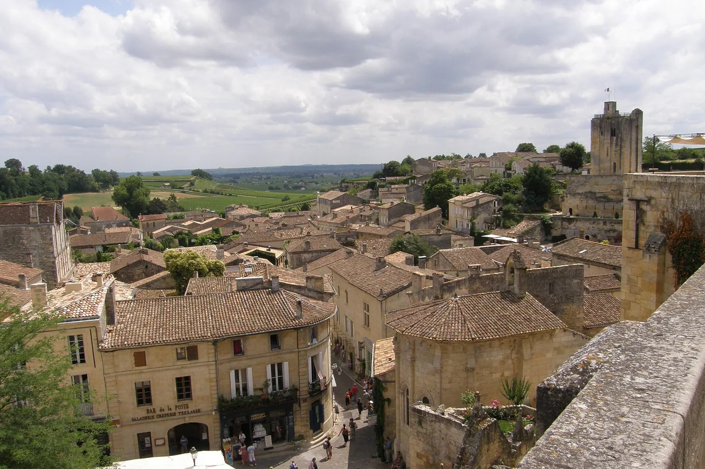
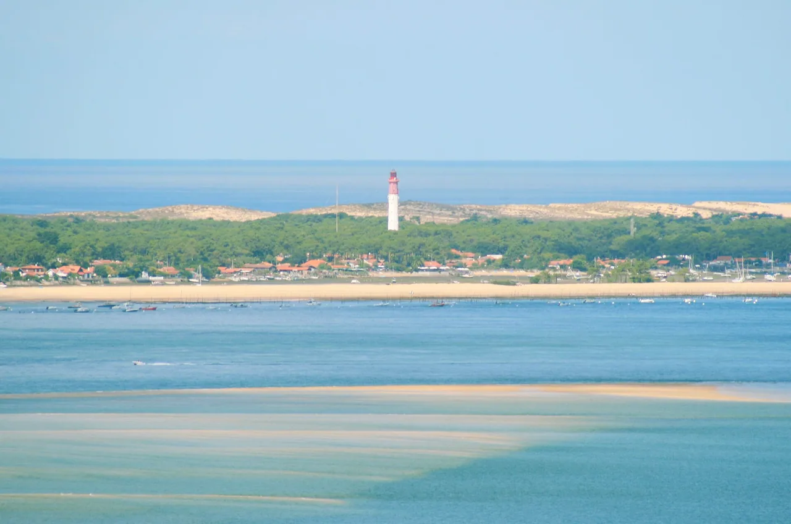
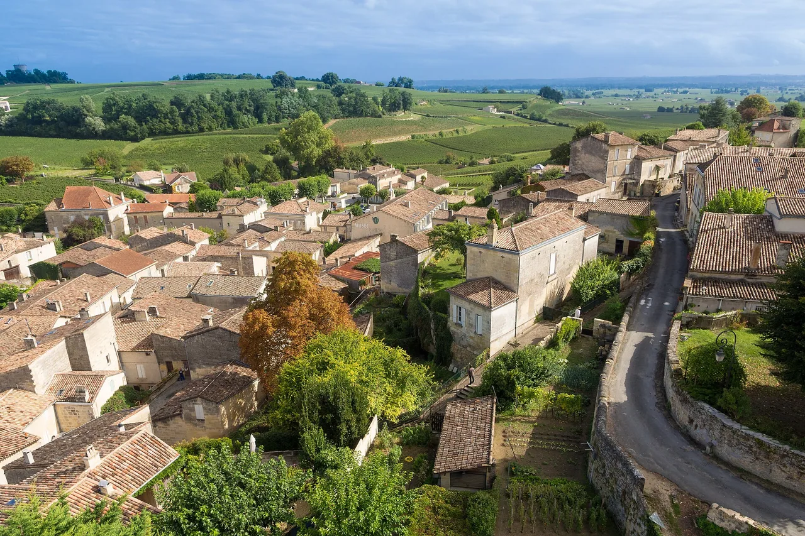
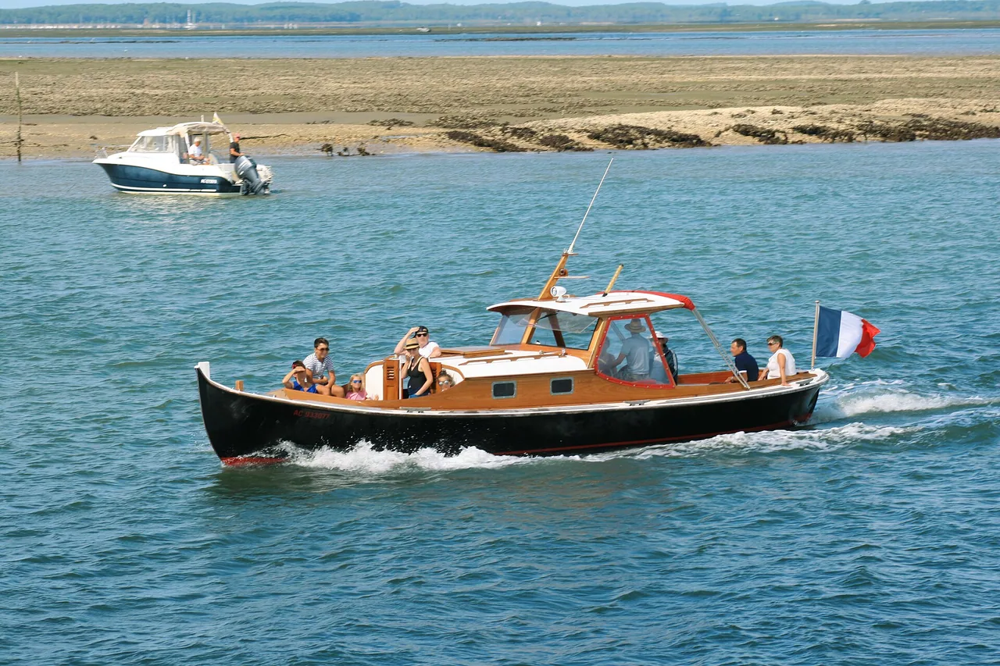
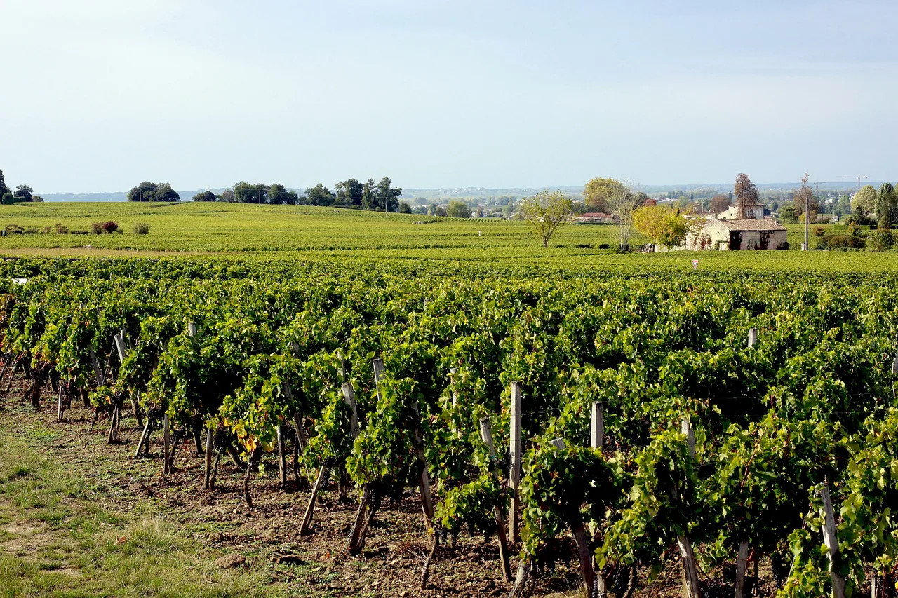
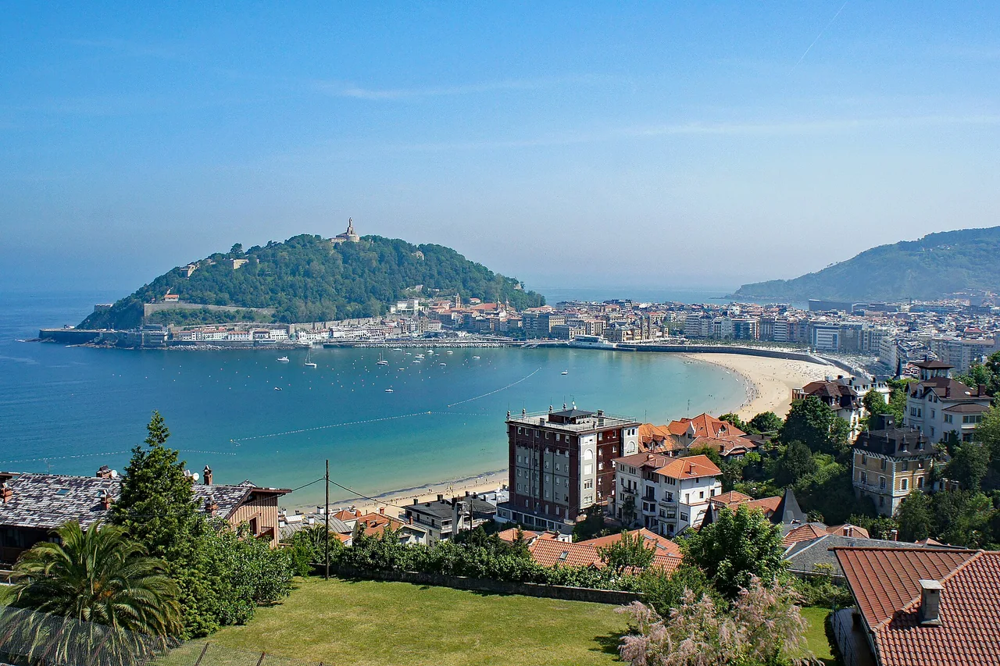

Chauffeur privé · Bordeaux
Bordeaux, ses vignobles, son littoral
Les lieux où Bordo Drive Tour vous conduit : la pierre blonde de Bordeaux, les rangs de vigne, la lumière de l’Atlantique.
Un van, un chauffeur, et la région à votre rythme : la pierre blonde de Bordeaux, les vignes de Saint-Émilion et du Médoc, la lumière du bassin d’Arcachon.
- Départ
- Bordeaux
- À bord
- Jusqu’à 7 passagers
- Disponibilité
- 24h/24
- Avis Google
- 5,0 sur 5
La galerie
Pierre blonde, vignes et océan
-

Bordeaux & PatrimoinePlace de la Bourse, Bordeaux -

Vignobles & ChâteauxPied de vigne, Saint-Émilion -

Échappées AtlantiquesLa presqu’île du Cap Ferret, vue de la dune du Pilat -

Vignobles & ChâteauxRangs de vigne à l’automne, Saint-Émilion -

Échappées AtlantiquesJetée d’Eyrac, Arcachon -

Vignobles & ChâteauxLe van devant un château -

Vignobles & ChâteauxUn château parmi les vignes, Saint-Émilion -

Bordeaux & PatrimoineSaint-Émilion vu du haut du village -

Vignobles & ChâteauxGrappes de cabernet sauvignon, Médoc -

Échappées AtlantiquesPhare du Cap Ferret, bassin d’Arcachon -

Bordeaux & PatrimoineSaint-Émilion, entre toits et vignes -

Vignobles & ChâteauxVignoble de Saint-Estèphe, Médoc -

Bordeaux & PatrimoinePont de Pierre, Bordeaux -

Échappées AtlantiquesPinasse sur le bassin d’Arcachon -

Vignobles & ChâteauxVignes et propriété, Saint-Émilion -

Échappées AtlantiquesBaie de la Concha, Saint-Sébastien -
Bordeaux & PatrimoineLe clocher de Saint-Émilion au-dessus des vignes -

Flotte & ConfortLe Classe V, trois quarts avant -
Flotte & ConfortLe Classe V, profil gauche -

Flotte & ConfortLe Classe V, vue arrière -

Flotte & ConfortLe Classe V, profil droit -
Flotte & ConfortLe Classe V, face avant


Réservation
Une excursion sur mesure, au départ de Bordeaux
Composez votre journée en ligne, écrivez ou appelez : l’un de nos chauffeurs ajuste l’itinéraire avec vous. Tous les jours, 24h/24.